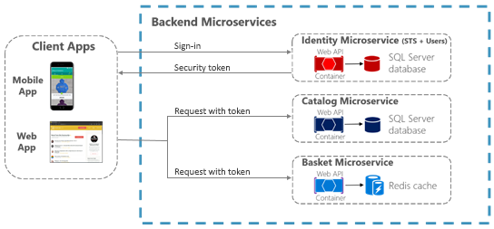

Make secure .NET Microservices and Web Applications
There are so many aspects about security in microservices and web applications that the topic could easy take several books like this one so, in this section, we’ll focus on authentication, authorization, and application secrets.
It’s often necessary for resources and APIs published by a service to be limited to certain trusted users or clients. The first step to making these sorts of API-level trust decisions is authentication. Authentication is the process of reliably verify a user’s identity.
In microservice scenarios, authentication is typically handled centrally. If you’re using an API Gateway, the gateway is a good place to authenticate, as shown in Figure 9-1. If you use this approach, make sure that the individual microservices cannot be reached directly (without the API Gateway) unless additional security is in place to authenticate messages whether they come from the gateway or not.
Figure 9-1. Centralized authentication with an API Gateway
If services can be accessed directly, an authentication service like Azure Active Directory or a dedicated authentication microservice acting as a security token service (STS) can be used to authenticate users. Trust decisions are shared between services with security tokens or cookies. (These tokens can be shared between applications, if needed, in ASP.NET Core with data protection services.) This pattern is illustrated in Figure 9-2.

Figure 9-2. Authentication by identity microservice; trust is shared using an authorization token
The primary mechanism in ASP.NET Core for identifying an application’s users is the ASP.NET Core Identity membership system. ASP.NET Core Identity stores user information (including sign-in information, roles, and claims) in a data store configured by the developer. Typically, the ASP.NET Core Identity data store is an Entity Framework store provided in the Microsoft.AspNetCore.Identity.EntityFrameworkCore package. However, custom stores or other third-party packages can be used to store identity information in Azure Table Storage, CosmosDB, or other locations.
The following code is taken from the ASP.NET Core Web Application project template with individual user account authentication selected. It shows how to configure ASP.NET Core Identity using EntityFramework.Core in the Startup.ConfigureServices method.
Once ASP.NET Core Identity is configured, you enable it by calling app.UseIdentity in the service’s Startup.Configure method.
Using ASP.NET Core Identity enables several scenarios:
ASP.NET Core Identity also supports two-factor authentication.
For authentication scenarios that make use of a local user data store and that persist identity between requests using cookies (as is typical for MVC web applications), ASP.NET Core Identity is a recommended solution.
ASP.NET Core also supports using external authentication providers to let users sign in via OAuth 2.0 flows. This means that users can sign in using existing authentication processes from providers like Microsoft, Google, Facebook, or Twitter and associate those identities with an ASP.NET Core identity in your application.
To use external authentication, you include the appropriate authentication middleware in your application’s HTTP request processing pipeline. This middleware is responsible for handling requests to return URI routes from the authentication provider, capturing identity information, and making it available via the SignInManager.GetExternalLoginInfo method.
Popular external authentication providers and their associated NuGet packages are shown below.
In all cases, the middleware is registered with a call to a registration method similar to app.Use{ExternalProvider}Authentication in Startup.Configure. These registration methods take an options object that contains an application ID and secret information (a password, for instance), as needed by the provider. External authentication providers require the application to be registered (as explained in ASP.NET Core documentation) so that they can inform the user what application is requesting access to their identity.
Once the middleware is registered in Startup.Configure, you can prompt users to sign in from any controller action. To do this, you create an AuthenticationProperties object that includes the authentication provider’s name and a redirect URL. You then return a Challenge response that passes the AuthenticationProperties object. The following code shows an example of this.
The redirectUrl parameter includes the URL that the external provider should redirect to once the user has authenticated. The URL should represent an action that will sign the user in based on external identity information, as in the following simplified example:
If you choose the Individual User Account authentication option when you create the ASP.NET Code web application project in Visual Studio, all the code necessary to sign in with an external provider is already in the project, as shown in Figure 9-3.
Figure 9-3. Selecting an option for using external authentication when creating a web application project
In addition to the external authentication providers listed previously, third-party packages are available that provide middleware for using many more external authentication providers. For a list, see the AspNet.Security.OAuth.Providers repo on GitHub.
You can also create your own external authentication middleware to solve some special need.
Authenticating with ASP.NET Core Identity (or Identity plus external authentication providers) works well for many web application scenarios in which storing user information in a cookie is appropriate. In other scenarios, though, cookies are not a natural means of persisting and transmitting data.
For example, in an ASP.NET Core Web API that exposes RESTful endpoints that might be accessed by Single Page Applications (SPAs), by native clients, or even by other Web APIs, you typically want to use bearer token authentication instead. These types of applications do not work with cookies, but can easily retrieve a bearer token and include it in the authorization header of subsequent requests. To enable token authentication, ASP.NET Core supports several options for using OAuth 2.0 and OpenID Connect.
If user information is stored in Azure Active Directory or another identity solution that supports OpenID Connect or OAuth 2.0, you can use the Microsoft.AspNetCore.Authentication.OpenIdConnect package to authenticate using the OpenID Connect workflow. For example, to authenticate to the Identity.Api microservice in eShopOnContainers, an ASP.NET Core web application can use middleware from that package as shown in the following simplified example in Startup.cs:
Note that when you use this workflow, the ASP.NET Core Identity middleware is not needed, because all user information storage and authentication is handled by the Identity service.
If you prefer to issue security tokens for local ASP.NET Core Identity users rather than using an external identity provider, you can take advantage of some good third-party libraries.
IdentityServer4 and OpenIddict are OpenID Connect providers that integrate easily with ASP.NET Core Identity to let you issue security tokens from an ASP.NET Core service. The IdentityServer4 documentation has in-depth instructions for using the library. However, the basic steps to using IdentityServer4 to issue tokens are as follows.
When you specify clients and resources for IdentityServer4 to use, you can pass an IEnumerable<T> collection of the appropriate type to methods that take in-memory client or resource stores. Or for more complex scenarios, you can provide client or resource provider types via Dependency Injection.
A sample configuration for IdentityServer4 to use in-memory resources and clients provided by a custom IClientStore type might look like the following example:
Authenticating against an OpenID Connect endpoint or issuing your own security tokens covers some scenarios. But what about a service that simply needs to limit access to those users who have valid security tokens that were provided by a different service?
For that scenario, authentication middleware that handles JWT tokens is available in the Microsoft.AspNetCore.Authentication.JwtBearer package. JWT stands for “JSON Web Token” and is a common security token format (defined by RFC 7519) for communicating security claims. A simplified example of how to use middleware to consume such tokens might look like this code fragment, taken from the Ordering.Api microservice of eShopOnContainers.
The parameters in this usage are:
Another parameter, RequireHttpsMetadata, is useful for testing purposes; you set this parameter to false so you can test in environments where you don’t have certificates. In real-world deployments, JWT bearer tokens should always be passed only over HTTPS.
With this middleware in place, JWT tokens are automatically extracted from authorization headers. They are then deserialized, validated (using the values in the Audience and Authority parameters), and stored as user information to be referenced later by MVC actions or authorization filters.
The JWT bearer authentication middleware can also support more advanced scenarios, such as using a local certificate to validate a token if the authority is not available. For this scenario, you can specify a TokenValidationParameters object in the JwtBearerOptions object.
After authentication, ASP.NET Core Web APIs need to authorize access. This process allows a service to make APIs available to some authenticated users, but not to all. Authorization can be done based on users’ roles or based on custom policy, which might include inspecting claims or other heuristics.
Restricting access to an ASP.NET Core MVC route is as easy as applying an Authorize attribute to the action method (or to the controller’s class if all the controller’s actions require authorization), as shown in following example:
By default, adding an Authorize attribute without parameters will limit access to authenticated users for that controller or action. To further restrict an API to be available for only specific users, the attribute can be expanded to specify required roles or policies that users must satisfy.
ASP.NET Core Identity has a built-in concept of roles. In addition to users, ASP.NET Core Identity stores information about different roles used by the application and keeps track of which users are assigned to which roles. These assignments can be changed programmatically with the RoleManager type that updates roles in persisted storage, and the UserManager type that can grant or revoke roles from users.
If you’re authenticating with JWT bearer tokens, the ASP.NET Core JWT bearer authentication middleware will populate a user’s roles based on role claims found in the token. To limit access to an MVC action or controller to users in specific roles, you can include a Roles parameter in the Authorize annotation (attribute), as shown in the following code fragment:
In this example, only users in the Administrator or PowerUser roles can access APIs in the ControlPanel controller (such as executing the SetTime action). The ShutDown API is further restricted to allow access only to users in the Administrator role.
To require a user be in multiple roles, you use multiple Authorize attributes, as shown in the following example:
In this example, to call API1, a user must:
Custom authorization rules can also be written using authorization policies. This section provides an overview. For more information, see the ASP.NET Authorization Workshop.
Custom authorization policies are registered in the Startup.ConfigureServices method using the service AddAuthorization method. This method takes a delegate that configures an AuthorizationOptions argument.
As shown in the example, policies can be associated with different types of requirements. After the policies are registered, they can be applied to an action or controller by passing the policy’s name as the Policy argument of the Authorize attribute (for example, [Authorize(Policy=“EmployeesOnly”)]) Policies can have multiple requirements, not just one (as shown in these examples).
In the previous example, the first AddPolicy call is just an alternative way of authorizing by role. If [Authorize(Policy=“AdministratorsOnly”)] is applied to an API, only users in the Administrator role will be able to access it.
The second AddPolicy call demonstrates an easy way to require that a particular claim should be present for the user. The RequireClaim method also optionally takes expected values for the claim. If values are specified, the requirement is met only if the user has both a claim of the correct type and one of the specified values. If you’re using the JWT bearer authentication middleware, all JWT properties will be available as user claims.
The most interesting policy shown here is in the third AddPolicy method, because it uses a custom authorization requirement. By using custom authorization requirements, you can have a great deal of control over how authorization is performed. For this to work, you must implement these types:
If the user meets the requirement, a call to context.Succeed will indicate that the user is authorized. If there are multiple ways that a user might satisfy an authorization requirement, multiple handlers can be created.
In addition to registering custom policy requirements with AddPolicy calls, you also need to register custom requirement handlers via Dependency Injection (services.AddTransient<IAuthorizationHandler, MinimumAgeHandler>()).
An example of a custom authorization requirement and handler for checking a user’s age (based on a DateOfBirth claim) is available in the ASP.NET Core authorization documentation.
To connect with protected resources and other services, ASP.NET Core applications typically need to use connection strings, passwords, or other credentials that contain sensitive information. These sensitive pieces of information are called secrets. It’s a best practice to not include secrets in source code and making sure not to store secrets in source control. Instead, you should use the ASP.NET Core configuration model to read the secrets from more secure locations.
You must separate the secrets for accessing development and staging resources from the ones used for accessing production resources, because different individuals will need access to those different sets of secrets. To store secrets used during development, common approaches are to either store secrets in environment variables or by using the ASP.NET Core Secret Manager tool. For more secure storage in production environments, microservices can store secrets in an Azure Key Vault.
One way to keep secrets out of source code is for developers to set string-based secrets as environment variables on their development machines. When you use environment variables to store secrets with hierarchical names, such as the ones nested in configuration sections, you must name the variables to include the complete hierarchy of its sections, delimited with colons (:).
For example, setting an environment variable Logging:LogLevel:Default to Debug value would be equivalent to a configuration value from the following JSON file:
To access these values from environment variables, the application just needs to call AddEnvironmentVariables on its ConfigurationBuilder when constructing an IConfigurationRoot object.
Note that environment variables are commonly stored as plain text, so if the machine or process with the environment variables is compromised, the environment variable values will be visible.
The ASP.NET Core Secret Manager tool provides another method of keeping secrets out of source code. To use the Secret Manager tool, install the package Microsoft.Extensions.Configuration.SecretManager in your project file. Once that dependency is present and has been restored, the dotnet user-secrets command can be used to set the value of secrets from the command line. These secrets will be stored in a JSON file in the user’s profile directory (details vary by OS), away from source code.
Secrets set by the Secret Manager tool are organized by the UserSecretsId property of the project that’s using the secrets. Therefore, you must be sure to set the UserSecretsId property in your project file, as shown in the snippet below. The default value is a GUID assigned by Visual Studio, but the actual string is not important as long as it’s unique in your computer.
Using secrets stored with Secret Manager in an application is accomplished by calling AddUserSecrets on the ConfigurationBuilder instance to include secrets for the application in its configuration. The generic parameter T should be a type from the assembly that the UserSecretId was applied to. Usually using AddUserSecrets is fine.
The AddUserSecrets<Startup>() is included in the default options for the Development environment when using the CreateDefaultBuilder method in Program.cs.
Secrets stored as environment variables or stored by the Secret Manager tool are still stored locally and unencrypted on the machine. A more secure option for storing secrets is Azure Key Vault, which provides a secure, central location for storing keys and secrets.
The Microsoft.Extensions.Configuration.AzureKeyVault package allows an ASP.NET Core application to read configuration information from Azure Key Vault. To start using secrets from an Azure Key Vault, you follow these steps:
IMPORTANT: It’s a best practice to register Azure Key Vault as the last configuration provider so it can override configuration values from previous providers.